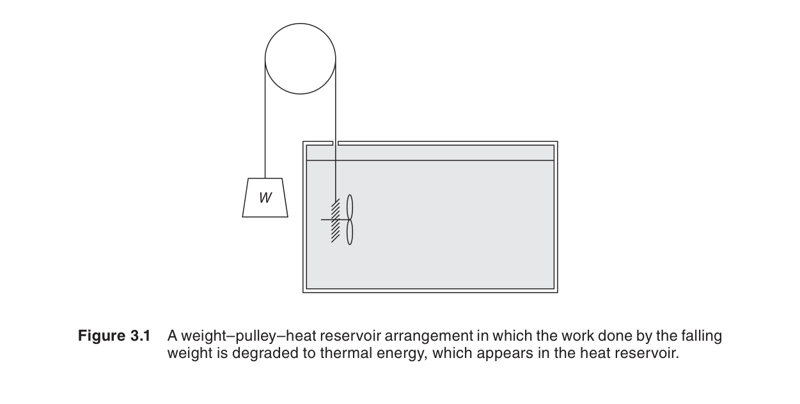
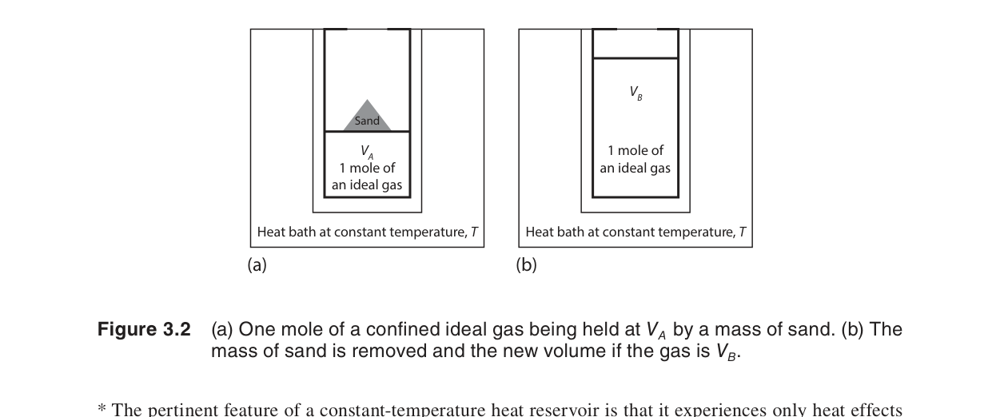
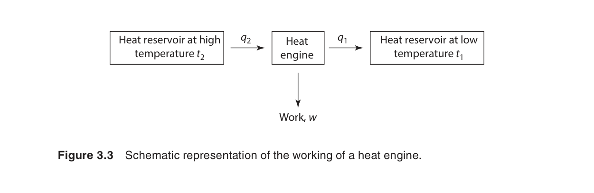
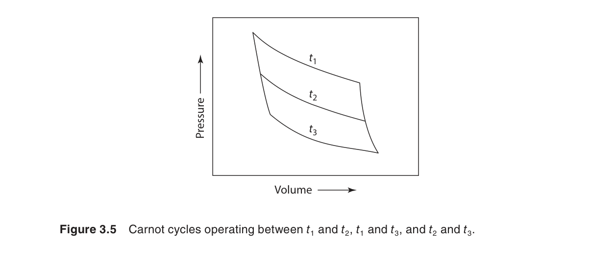
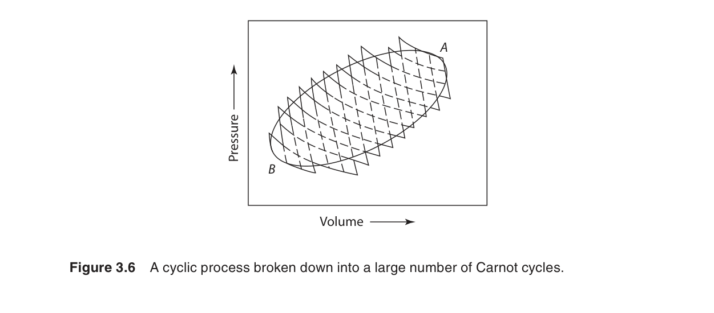
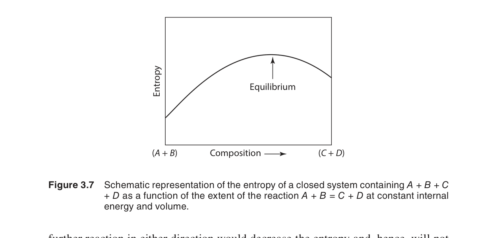
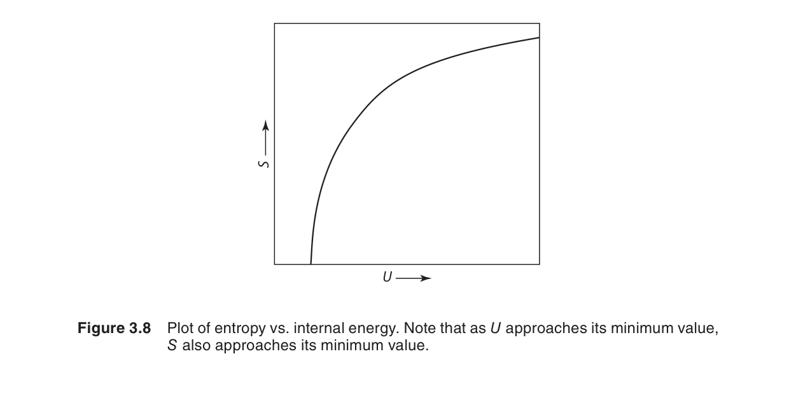
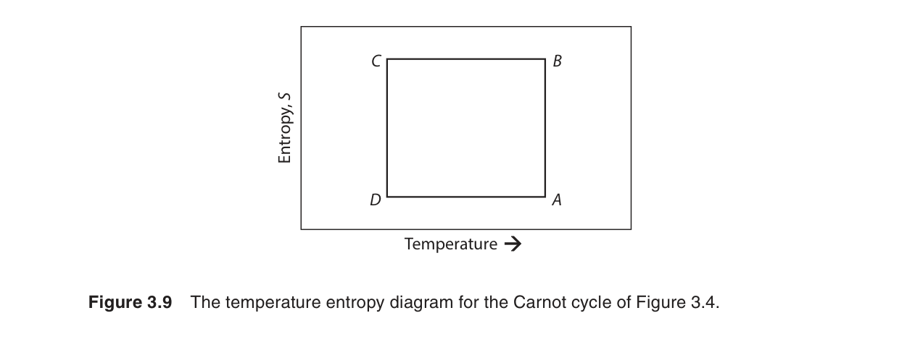
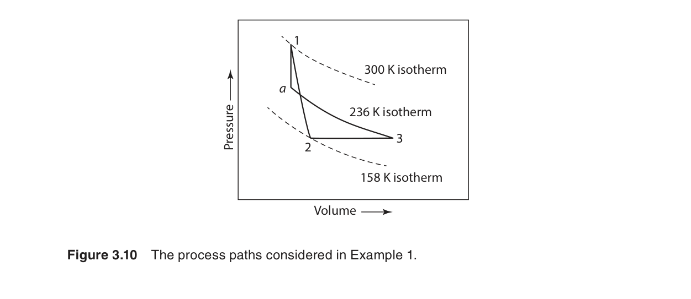
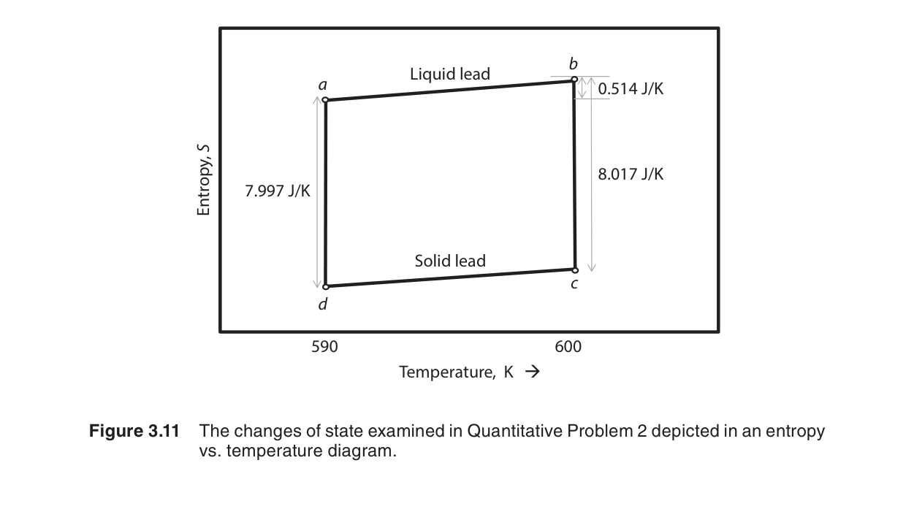

熱力學第二定律
第一定律告訴我們能量必須守恆，但它沒有告訴我們一個過程是否會發生。熱從高溫物體流向低溫物體——第一定律不禁止反過來，但你從未見過冰塊自發變熱而周圍的水變冷。第二定律提供了這個方向性：孤立系統的自發過程總是朝熵增加的方向進行。
在本章中，我們將學習：
- 自發過程的共同特徵——不可逆性
- 熵的定義：$dS = \delta q_{\text{rev}}/T$
- 可逆過程與不可逆過程中熵變的計算
- 卡諾循環（Carnot cycle）與熱機效率上限
- 熱力學溫標——獨立於任何物質的絕對溫標
- 第二定律的多種等價表述（Clausius、Kelvin-Planck）
- 最大功定理與平衡的熵判據
- 合併第一和第二定律的基本方程式：$dU = T\,dS - P\,dV$
3.1 導論（Introduction）
第一定律建立了能量守恆，但它有一個根本的局限性——它不區分可逆過程和不可逆過程。從能量的角度看，熱從低溫流向高溫並不違反第一定律（只要有人提供等量的功）。但我們從未觀察到這自發發生。第二定律正是用來區分可能和不可能的過程。
第二定律的核心概念是熵（entropy, $S$）——一個衡量系統無序度或能量「品質」的狀態函數。熵的引入使我們能夠量化不可逆性，並精確預測平衡條件。
物理直覺：想像一盒氣體，所有分子集中在一側（低熵），然後撤去隔板——分子會自發擴散到整個盒子（高熵）。這個過程不會自發反過來。同樣，一滴墨水落入水中會擴散，不會自發聚集。這些日常現象反映了一個深刻的自然法則：孤立系統自發趨向於最可能（即熵最大）的宏觀狀態。
為什麼需要一個新的狀態函數？第一定律的 $U$ 告訴我們能量有多少，但沒有告訴我們能量有多「有用」。$100\ \text{J}$ 在 $1000\ \text{K}$ 的熱庫中比在 $300\ \text{K}$ 的熱庫中能產生更多的有用功。熵 $S$ 正是量化能量「品質」（即可用性）的工具——熵越低，能量品質越高。
3.2 自發或自然過程（Spontaneous or Natural Processes）
自發過程是指不需要外界干預就能自然發生的過程。所有自發過程有一個共同特徵——它們是不可逆的（irreversible）。也就是說，一旦發生，系統和環境不可能同時恢復原狀而不引起其他變化。

常見的自發/不可逆過程：
- 熱從高溫流向低溫（自發；反向需要熱泵做功）
- 氣體向真空自由膨脹（自發；反向需要壓縮做功）
- 兩種氣體的互相擴散（自發；反向需要分離做功）
- 摩擦產生熱（自發；反向不可能——熱不能完全轉化為機械功而不引起其他變化）
數值例：考慮 1 mol 理想氣體在 300 K 下向真空膨脹，體積從 1 L 增加到 10 L。
- 系統熵變：$\Delta S_{\text{sys}} = nR\ln(V_2/V_1) = (1)(8.314)\ln(10) \approx 19.14\ \text{J/K}$
- 因為是自由膨脹（$q = 0$），環境無熱交換：$\Delta S_{\text{surr}} = 0$
- 宇宙總熵變：$\Delta S_{\text{univ}} = 19.14\ \text{J/K} > 0$——不可逆！
再考慮熱傳導：300 K 物體與 310 K 物體接觸，傳遞 100 J 熱量。
- 低溫物體吸熱：$\Delta S_{\text{cold}} = 100/300 = 0.333\ \text{J/K}$
- 高溫物體放熱：$\Delta S_{\text{hot}} = -100/310 = -0.323\ \text{J/K}$
- 總熵變：$\Delta S_{\text{univ}} = 0.010\ \text{J/K} > 0$——自發且不可逆
共同特徵：所有自發過程都涉及能量從「集中」形式（功、有序動能）向「分散」形式（熱、隨機分子運動）的轉化。這種分散化趨勢是熵增的微觀根源。
3.3 熵與不可逆性的量化（Entropy and the Quantification of Irreversibility）
Clausius 的關鍵洞察是：對於一個可逆過程，$\delta q_{\text{rev}}/T$ 的積分與路徑無關——這意味著存在一個狀態函數，他稱之為熵 $S$：
對於有限的可逆過程：
推導 1：$dS = \delta q_{\text{rev}}/T$ 作為正合微分（Exact Differential）
要證明 $S$ 是狀態函數，只需證明 $\oint \delta q_{\text{rev}}/T = 0$ 沿任意可逆循環成立。考慮卡諾循環——它由兩個等溫過程和兩個絕熱過程組成：
步驟 1→2（等溫膨脹，$T = T_h$）：$\displaystyle \int_1^2 \frac{\delta q_{\text{rev}}}{T} = \frac{q_h}{T_h}$
步驟 2→3（絕熱膨脹）：$\delta q = 0 \;\Rightarrow\; \int_2^3 \frac{\delta q_{\text{rev}}}{T} = 0$
步驟 3→4（等溫壓縮，$T = T_c$）：$\displaystyle \int_3^4 \frac{\delta q_{\text{rev}}}{T} = \frac{q_c}{T_c}$
步驟 4→1（絕熱壓縮）：$\delta q = 0 \;\Rightarrow\; \int_4^1 \frac{\delta q_{\text{rev}}}{T} = 0$
由卡諾定理知 $\displaystyle \frac{q_h}{T_h} + \frac{q_c}{T_c} = 0$，因此：
由於任意可逆循環都可以分解為無數個微小卡諾循環的疊加，上式對任意可逆循環成立。因此 $\delta q_{\text{rev}}/T$ 是正合微分，$S$ 是狀態函數。
推導 2：理想氣體等溫膨脹的 $\Delta S$
對於 $n$ mol 理想氣體在溫度 $T$ 下從 $V_1$ 可逆地膨脹到 $V_2$：
由第一定律：$dU = \delta q_{\text{rev}} + \delta w_{\text{rev}}$。等溫下理想氣體 $dU = 0$，且 $\delta w_{\text{rev}} = -P\,dV$。
因此 $\delta q_{\text{rev}} = P\,dV = \dfrac{nRT}{V}\,dV$。
代入熵定義：
積分：
此結果獨立於過程的可逆性——即使實際過程是不可逆的自由膨脹，系統的 $\Delta S$ 仍然等於 $nR\ln(V_2/V_1)$，因為熵是狀態函數。
關鍵點：雖然 $\delta q$ 是路徑函數，但 $\delta q_{\text{rev}}/T$ 是正合微分（exact differential）——這是第二定律最深刻的數學結果。
對於不可逆過程，Clausius 不等式成立：
合併可逆與不可逆情況：
對於孤立系統（$\delta q = 0$）：
這是第二定律最簡潔的表述：孤立系統的熵永不減少。自發過程使熵增加（$dS > 0$）；平衡時熵達到最大值（$dS = 0$）。
3.4–3.6 可逆與不可逆過程的說明
本節通過理想氣體的等溫膨脹來具體展示可逆與不可逆過程的區別。
可逆等溫膨脹
氣體對抗的壓力始終等於系統壓力（$P_{\text{ext}} = P_{\text{sys}}$），過程無限緩慢。系統從恒溫熱庫吸熱 $q_{\text{rev}}$，對外做功 $w_{\text{rev}}$：
環境的熵變：$\Delta S_{\text{surr}} = -q_{\text{rev}}/T = -nR\ln(V_2/V_1)$。總熵變：$\Delta S_{\text{univ}} = \Delta S_{\text{sys}} + \Delta S_{\text{surr}} = 0$——可逆過程的總熵不變。
不可逆等溫膨脹（自由膨脹）
氣體向真空膨脹（$P_{\text{ext}} = 0$），$w = 0$，等溫下 $q = 0$。但 $\Delta S_{\text{sys}}$ 仍是 $nR\ln(V_2/V_1)$（因為 $S$ 是狀態函數！）。環境熵變為 0（無熱交換）。總熵變 $> 0$——不可逆過程使宇宙的熵增加。

3.7–3.8 理想氣體的壓縮與絕熱膨脹
可逆 vs 不可逆壓縮
將理想氣體從 $(P_1, V_1)$ 壓縮到 $(P_2, V_2)$：
- 可逆壓縮：功最小（對系統做功最少），系統可以完全恢復原狀。$\Delta S_{\text{univ}} = 0$。
- 不可逆壓縮：需要更多的功，多餘的功變成熱。$\Delta S_{\text{univ}} > 0$。
數值例：1 mol 理想氣體在 300 K 下從 1 atm 被壓縮到 10 atm。
- 可逆壓縮功：$w_{\text{rev}} = nRT\ln(P_2/P_1) = (1)(8.314)(300)\ln(10) = 5743\ \text{J}$（系統接受外界做功）
- 不可逆壓縮（如恆外壓 $P_{\text{ext}} = 10\ \text{atm}$）：$w_{\text{irrev}} = P_{\text{ext}}\Delta V$，做功更多，多餘部分以熱形式散失
- 無論可逆不可逆，$\Delta S_{\text{sys}} = nR\ln(V_1/V_2) = -19.14\ \text{J/K}$（熵減少，因為體積減小）
- 但總熵變：可逆時 $\Delta S_{\text{univ}} = 0$；不可逆時 $\Delta S_{\text{univ}} > 0$
可逆絕熱過程的熵
可逆絕熱過程中 $q = 0$，因此：
可逆絕熱過程是等熵過程（isentropic process）——熵保持不變。這就是為什麼 $PV^\gamma = \text{constant}$ 也稱為等熵關係。
對於不可逆絕熱過程（如自由膨脹），雖然 $q = 0$，但 $\Delta S > 0$——因為過程不可逆，Clausius 不等式中的等號不成立。
3.9 小結（Summary Statements）
在進入熱機的討論之前，Gaskell 總結了三個關鍵陳述：
- 存在一個狀態函數 $S$（熵），其變化定義為 $dS = \delta q_{\text{rev}}/T$。
- 對於任何過程，$dS \geq \delta q/T$。等號對應可逆過程，不等號對應不可逆過程。
- 孤立系統中自發過程使熵增加（$\Delta S > 0$），平衡時熵最大（$\Delta S = 0$）。
可逆與不可逆過程的對比：
| 性質 | 可逆過程 | 不可逆過程 |
|---|---|---|
| $\Delta S_{\text{sys}}$ | 等於 $\int \delta q_{\text{rev}}/T$ | 等於 $\int \delta q_{\text{rev}}/T$（狀態函數！） |
| $\Delta S_{\text{surr}}$ | $-\int \delta q_{\text{rev}}/T$ | 取決於實際 $\delta q$ |
| $\Delta S_{\text{univ}}$ | $= 0$ | $> 0$ |
| 過程方向 | 可沿原路返回 | 不可沿原路返回 |
| 能量品質 | 保持不變 | 退化（功→熱） |
熵變計算的通用策略：
- 純物質相變：$\Delta S = \Delta H_{\text{trans}}/T_{\text{trans}}$（可逆相變點）
- 理想氣體狀態變化：$\Delta S = nC_V\ln(T_2/T_1) + nR\ln(V_2/V_1)$ 或 $\Delta S = nC_P\ln(T_2/T_1) - nR\ln(P_2/P_1)$
- 等溫混合：$\Delta S_{\text{mix}} = -R\sum n_i\ln x_i$
- 等溫熱傳導：$\Delta S = q(1/T_{\text{cold}} - 1/T_{\text{hot}})$
這些公式將在後續章節中反覆使用。
3.10 熱機的性質（The Properties of Heat Engines）
熱機是將熱轉化為功的裝置。Sadi Carnot 在 1824 年（比第一定律的建立還早 20 年！）分析了理想熱機的效率，奠定了第二定律的基礎。
卡諾循環（Carnot Cycle）由四個可逆步驟組成：
- 等溫膨脹（$T = T_h$）：從高溫熱庫吸熱 $q_h$
- 絕熱膨脹（$q = 0$）：溫度從 $T_h$ 降至 $T_c$
- 等溫壓縮（$T = T_c$）：向低溫熱庫放熱 $q_c$
- 絕熱壓縮（$q = 0$）：溫度從 $T_c$ 回升至 $T_h$

推導 3：卡諾效率 $\eta = 1 - T_c/T_h$
設工作物質為 $n$ mol 理想氣體，四個步驟的具體分析如下：
步驟 1→2（等溫膨脹，$T_h$）： $dU = 0$，因此：
步驟 2→3（絕熱膨脹）： $q = 0$，$PV^\gamma = \text{常數}$，$T_h V_2^{\gamma-1} = T_c V_3^{\gamma-1}$。
步驟 3→4（等溫壓縮，$T_c$）： $dU = 0$：
步驟 4→1（絕熱壓縮）： $q = 0$，$T_c V_4^{\gamma-1} = T_h V_1^{\gamma-1}$。
由絕熱關係：$T_h V_2^{\gamma-1} = T_c V_3^{\gamma-1}$ 和 $T_h V_1^{\gamma-1} = T_c V_4^{\gamma-1}$，可得：
因此：
即 $\displaystyle \frac{q_h}{T_h} + \frac{q_c}{T_c} = 0$。卡諾效率為：
這是任何在 $T_h$ 和 $T_c$ 之間運行的熱機的理論最高效率。實際熱機的效率永遠低於卡諾效率（因為不可逆性）。
卡諾效率：
這是任何在 $T_h$ 和 $T_c$ 之間運行的熱機的理論最高效率。實際熱機的效率永遠低於卡諾效率（因為不可逆性）。

效率計算例：一座核電站的反應堆溫度 $T_h = 600\ \text{K}$，冷卻水溫度 $T_c = 300\ \text{K}$。
- 卡諾極限效率：$\eta_{\text{Carnot}} = 1 - 300/600 = 0.5\ (50\%)$
- 實際效率（考慮各種不可逆損失）：約 $33\%$
- 不可逆性造成的功損失比例：$1 - 0.33/0.50 = 34\%$ 的潛在功被「浪費」
這就是為什麼工程師努力提高 $T_h$（開發耐高溫材料）和降低 $T_c$（改進散熱系統）——任何 $T_h$ 和 $T_c$ 之間的差距擴大都能提高效率上限。
3.11 熱力學溫標（The Thermodynamic Temperature Scale）
卡諾定理的一個重要推論是：所有可逆熱機的效率只取決於兩個熱庫的溫度，與工作物質無關。這為定義一個絕對溫標提供了基礎——不需要依賴任何特定物質的性質（如水銀的膨脹係數）。

對於可逆熱機：
推導 4：$\oint \delta q_{\text{rev}}/T = 0$——熵是狀態函數
由卡諾循環已得 $\displaystyle \frac{q_h}{T_h} + \frac{q_c}{T_c} = 0$。對於任意可逆循環，可將其劃分為無窮多個微小卡諾循環：
考慮每個微小卡諾循環 $i$，有 $\displaystyle \frac{\delta q_{h,i}}{T_{h,i}} + \frac{\delta q_{c,i}}{T_{c,i}} = 0$。
對所有微小循環求和（積分）：
這直接證明了 $\delta q_{\text{rev}}/T$ 是一個正合微分（exact differential），因此存在一個狀態函數 $S$ 使其 $dS = \delta q_{\text{rev}}/T$。
等價地，從狀態 A 到 B 的任意可逆路徑給出相同的熵變：
或等價地，對於卡諾循環：
這證明了 $dS = \delta q_{\text{rev}}/T$ 是正合微分——熵是狀態函數。
熱力學溫標的詳細推導：
設有三個熱庫，溫度分別為 $T_1$、$T_2$、$T_3$。在 $T_1$ 和 $T_2$ 之間運行的可逆熱機滿足：
同樣，$T_2$ 和 $T_3$ 之間：$\displaystyle \frac{q_2}{q_3} = f(T_2, T_3)$；$T_1$ 和 $T_3$ 之間：$\displaystyle \frac{q_1}{q_3} = f(T_1, T_3)$。
由於 $q_1/q_3 = (q_1/q_2)(q_2/q_3)$，可得：
這要求 $f(T_i, T_j) = \phi(T_i)/\phi(T_j)$ 的形式。Kelvin 選擇 $\phi(T) = T$（理想氣體溫標的形式），從而定義熱力學溫標：
熱力學溫標（單位：Kelvin）以水的三相點為固定點，定義為 273.16 K。這與理想氣體溫標完全一致，但具有更嚴格的理論基礎。
3.12 第二定律的表述（The Second Law of Thermodynamics）
第二定律有多種等價表述，每種都從不同角度捕捉了同一個物理事實：
| 表述 | 內容 |
|---|---|
| Clausius 表述 | 不可能將熱從低溫物體傳遞到高溫物體而不引起其他變化。 |
| Kelvin-Planck 表述 | 不可能從單一熱庫取熱並將其完全轉化為功而不引起其他變化。 |
| 熵表述 | 孤立系統的熵永不減少：$\Delta S_{\text{univ}} \geq 0$。 |
| Carathéodory 表述 | 在任何狀態的任意鄰近，存在無法通過絕熱可逆路徑到達的狀態。 |
等價性證明概要：
- Kelvin-Planck ⇒ Clausius：若 Clausius 表述不成立（熱可自發從低溫流向高溫），則可構造一台熱機：從 $T_h$ 吸熱 $Q$，做功 $W$，並用 $W$ 驅動此「反 Clausius」裝置將 $Q_c$ 從 $T_c$ 泵回 $T_h$，淨效果是從 $T_h$ 取熱 $Q - Q_c$ 完全轉化為功 $W$，違反 Kelvin-Planck。
- Clausius ⇒ 熵表述：若 $\Delta S_{\text{univ}} < 0$ 可能，則可構造一台違反 Clausius 的裝置。
- 熵表述 ⇒ Carathéodory：若所有狀態都可通過絕熱可逆路徑到達，則 $\Delta S = 0$ 對任意變化成立，矛盾。
這些等價性表明第二定律是一個深刻的、自洽的物理原理，而不僅僅是工程經驗總結。
3.13 最大功（Maximum Work）
第二定律的一個重要應用是計算一個過程可以產生的最大功。

對於一個從狀態 1 到狀態 2 的過程，系統對外做的最大功發生在過程完全可逆時。合併第一和第二定律：
因此：
對於等溫過程：
其中 $A = U - TS$ 是亥姆霍茲自由能（Helmholtz free energy）——將在第五章詳細展開。
最大功的實際意義：任何不可逆因素（摩擦、有限溫差傳熱、自由膨脹等）都會導致有用功的損失。損失的功等於 $T_0 \Delta S_{\text{univ}}$，其中 $T_0$ 是環境溫度。換言之，宇宙熵增直接度量了「浪費」的功。
3.14 熵與平衡判據（Entropy and the Criterion for Equilibrium）
對於一個孤立系統（$U$、$V$ 固定），平衡條件是熵達到最大值：
這是最基本的平衡判據。從它出發，結合不同的約束條件，可以推導出其他熱力學位（potential）的平衡判據：
- 孤立系統（$U$, $V$ 固定）：$S$ 最大 → 平衡
- 封閉系統（$T$, $V$ 固定）：$A$（亥姆霍茲自由能）最小 → 平衡
- 封閉系統（$T$, $P$ 固定）：$G$（吉布斯自由能）最小 → 平衡 ← 最常用
這些判據貫穿全書——從相平衡（第七章）到化學反應平衡（第十一章）到電化學（第十四章）。
熵平衡（Entropy Balance）的進一步分析：
對於任何過程，我們可以將熵變拆分為兩部分：
其中 $\Delta S_{\text{exchange}} = \int \delta q/T$ 是由熱交換引起的熵流，$\Delta S_{\text{generation}} \geq 0$ 是由不可逆性引起的熵產生（entropy generation）。這個「熵產生」的概念在工程熱力學中極為重要——它直接度量了過程的不可逆程度。
- 可逆過程：$\Delta S_{\text{generation}} = 0$，系統熵變完全來自熱交換
- 不可逆過程：$\Delta S_{\text{generation}} > 0$，系統熵變大於熱交換引起的部分
- 絕熱過程（$\delta q = 0$）：$\Delta S_{\text{sys}} = \Delta S_{\text{generation}} \geq 0$
從熵判據到自由能判據的推導（示意）：
考慮系統+環境作為孤立系統。平衡時 $dS_{\text{univ}} = dS_{\text{sys}} + dS_{\text{surr}} = 0$。
若環境是溫度 $T$ 和壓力 $P$ 固定的熱庫，則 $dS_{\text{surr}} = -\delta q/T$。代入 $dU = \delta q + \delta w$ 可得：
定溫定壓下 $\delta w = -P\,dV$，整理得：
這就是為什麼 $\Delta G \leq 0$ 是定溫定壓下自發性的判據。
3.15 第一與第二定律的結合（The Combined Statement）
合併第一定律（$dU = \delta q + \delta w$）和第二定律（$dS = \delta q_{\text{rev}}/T$，且可逆時 $\delta w_{\text{rev}} = -P\,dV$），得到熱力學最基本的方程式：

這條看似簡單的方程式是整個平衡熱力學的基石。從它出發，配合 Legendre 變換，可以推導出所有其他熱力學關係。
推導 5：從 $dU$ 到四個基本方程——Legendre 變換
什麼是 Legendre 變換？將一個函數對其自然變數的導數作為新變數，從而變換到一個新的特徵函數。在熱力學中，我們用 Legendre 變換從 $U(S, V)$ 生成 $H(S, P)$、$A(T, V)$ 和 $G(T, P)$。
由 $dU = T\,dS - P\,dV$：
自然變數為 $S$ 和 $V$，且 $T = (\partial U/\partial S)_V$，$-P = (\partial U/\partial V)_S$。
焓 $H$： 將 $V$ 變換為 $P$：
亥姆霍茲自由能 $A$： 將 $S$ 變換為 $T$：
吉布斯自由能 $G$： 同時將 $S$ 變換為 $T$，$V$ 變換為 $P$：
這四個方程統稱為基本方程式（Fundamental Equations），每個方程對應一組特定的自然變數。選擇最方便的一組取決於系統的約束條件。
這些基本方程式（fundamental equations）是第五章的主題。但概念根植於此——第二定律引入的 $T\,dS$ 項。
3.16 定性例題 1：熵變的方向判斷

例題：判斷以下過程在給定條件下是否自發，並說明理由。
- 兩種理想氣體在定溫定壓下混合：自發。$\Delta S_{\text{mix}} = -R\sum n_i\ln x_i > 0$（$x_i$ 為摩爾分數）。混合熵恆為正，因此混合過程總是自發的。
- 0°C 的冰在 25°C 的空氣中融化：自發。冰的融化熵 $\Delta S_{\text{fus}} = \Delta H_{\text{fus}}/T_{\text{fus}} > 0$，且環境溫度高於冰點，熱量從環境流向冰，使總熵增加。
- 壓縮彈簧在真空中釋放：自發。彈簧的勢能轉化為內能（彈性介質的分子運動加劇），雖然系統內能增加，但這是自發的不可逆過程，總熵增加。
3.17 定量例題 2：理想氣體熵變計算

例題：2 mol 理想氣體（$C_{V,m} = 3R/2$）初始狀態為 300 K、2 atm，經以下過程達到 400 K、1 atm。求 $\Delta S$。
解：熵是狀態函數，我們可以設計一條可逆路徑來計算。選擇先等溫後等壓，或先等壓後等溫。
路徑 A：先等溫膨脹到 1 atm，再加熱到 400 K
步驟 1（等溫，300 K，2 atm → 1 atm）：
步驟 2（等壓加熱，300 K → 400 K）：
總熵變：$\Delta S = \Delta S_1 + \Delta S_2 = 11.53 + 11.94 = 23.47\ \text{J/K}$
3.18 定量例題 3：相變的熵變計算

例題：計算 1 mol 水在 100°C、1 atm 下汽化為水蒸氣的 $\Delta S$。已知水的汽化熱 $\Delta H_{\text{vap}} = 40.7\ \text{kJ/mol}$。
解：在正常沸點下，汽化是可逆相變（液體和蒸汽在 100°C、1 atm 下平衡共存）。因此可以直接使用熵定義：
檢驗：汽化過程中，水分子從有序的液態變為氣態，微觀狀態數 $\Omega$ 大幅增加，因此熵增加是合理的。
延伸：如果將 1 mol 水從 25°C 加熱到 100°C 然後汽化，總熵變為：
3.19 第二定律在材料科學中的意義
第二定律不僅是基礎物理原理，它在材料科學與工程中具有深遠的實際影響：
- 合金穩定性：給定成分和溫度，Gibbs 自由能最小的相是最穩定的。這解釋了為什麼某些合金成分會自發形成特定微結構。
- 擴散驅動力：原子從高化學勢區域向低化學勢區域擴散，是 $\Delta G < 0$ 的驅動結果。熵增原理預測了濃度梯度如何隨時間衰減。
- 相變溫度預測：Clapeyron 方程（第七章）從 $dG$ 推導，給出壓力如何影響熔點和沸點——直接來自第二定律和平衡條件 $dG = 0$。
- 腐蝕與氧化：金屬自發氧化的趨勢由 $\Delta G$ 決定。Ellingham 圖（第十二章）是第二定律在提取冶金學中最直接的應用。
- 熱處理工藝：淬火、回火等工藝利用不可逆過程控制微結構——工程師通過控制冷卻速率（從而控制不可逆程度）來獲得所需的材料性能。
理解第二定律使材料科學家能夠預測反應方向、設計工藝流程、優化能源效率——而不必依賴試錯法。
本章摘要
- 熵的定義：$dS = \delta q_{\text{rev}}/T$。熵是狀態函數——計算時走可逆路徑。
- 第二定律（不等號形式）：$dS \geq \delta q/T$。孤立系統中 $\Delta S \geq 0$。
- 可逆 vs 不可逆：可逆過程 $\Delta S_{\text{univ}} = 0$；不可逆過程 $\Delta S_{\text{univ}} > 0$。
- 卡諾循環：效率 $\eta = 1 - T_c/T_h$，是所有熱機的理論上限。
- 熱力學溫標：基於卡諾定理，$|q_h|/|q_c| = T_h/T_c$。獨立於任何物質。
- 最大功定理：可逆過程產生最大功。等溫可逆功 $w_{\text{max}} = \Delta U - T\Delta S = \Delta A$。
- 平衡判據：孤立系統 $S$ 最大；定溫定容 $A$ 最小；定溫定壓 $G$ 最小。
- 組合定律：$dU = T\,dS - P\,dV$——整個平衡熱力學的基石。
關鍵方程式總結
| 方程式 | 名稱 | 適用條件 |
|---|---|---|
| $dS = \delta q_{\text{rev}}/T$ | 熵的定義 | 可逆過程 |
| $dS \geq \delta q/T$ | Clausius 不等式 | 任何過程 |
| $\Delta S = nR\ln(V_2/V_1)$ | 等溫熵變（理想氣體） | 等溫過程 |
| $\Delta S = nC_P\ln(T_2/T_1)$ | 等壓熵變（理想氣體） | 等壓過程 |
| $\Delta S = nC_V\ln(T_2/T_1)$ | 等容熵變（理想氣體） | 等容過程 |
| $\eta = 1 - T_c/T_h$ | 卡諾效率 | 可逆熱機 |
| $dU = T\,dS - P\,dV$ | 組合定律 | 可逆/平衡過程 |
| $dH = T\,dS + V\,dP$ | 焓的基本方程 | 可逆/平衡過程 |
| $dA = -S\,dT - P\,dV$ | 亥姆霍茲自由能 | 可逆/平衡過程 |
| $dG = -S\,dT + V\,dP$ | 吉布斯自由能 | 可逆/平衡過程 |